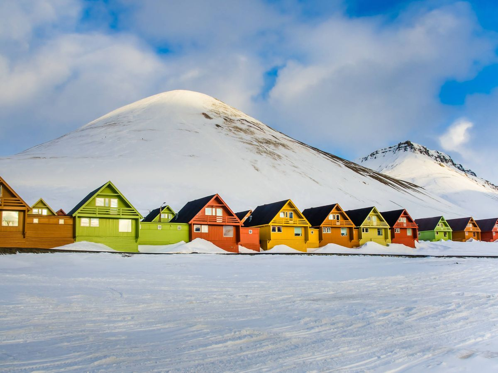
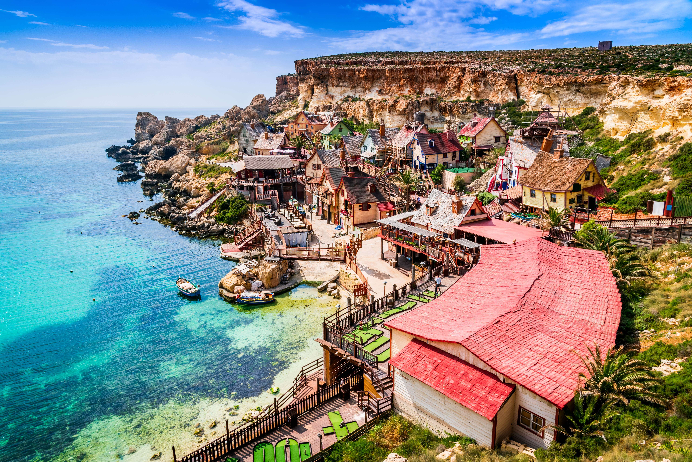
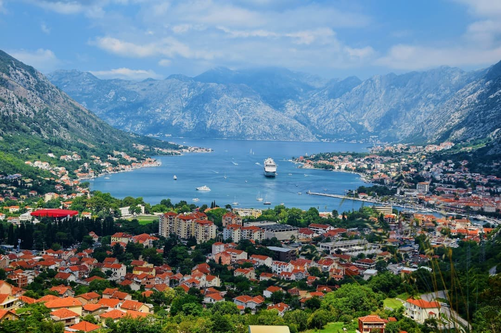

Ártico
Svalbard: un viaje al Ártico
Paisajes polares, noches infinitas y naturaleza salvaje.
Leer artículo →BLOG DE VIAJES / 01
Múltiples destinos, muchas formas de descubrir el mundo.
Explorar destinos
Paisajes polares, noches infinitas y naturaleza salvaje.
Leer artículo →
Historia, calles de piedra y aguas transparentes.
Leer artículo →
Montañas, pueblos medievales y la bahía de Kotor.
Leer artículo →No se encontraron destinos.
Sin coordenadas nace de la curiosidad por descubrir el mundo, explorar lugares poco habituales y conocer otras formas de vivir. Aquí encontrarás inspiración para tu próxima aventura, recomendaciones, curiosidades y consejos prácticos para organizar tus viajes.